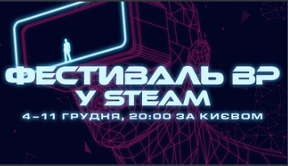
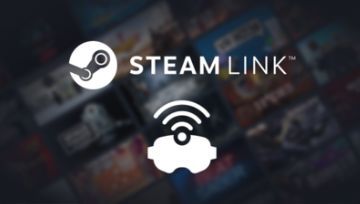

4 грудня
Фестиваль VR у Steam уже розпочався!
Пн. 4 грудня
Свято заворожливого світу віртуальної реальності зі знижками, демоверсіями та майбутніми релізами
Преєднатися до Фестивалю VR у Steame із 4 до 11 грудня й насоложуйтеся знижими ,демоверсія та
майбутні релізи

30 листопада
Бездротова трансляція ВР-ігор з бібліотеки Steam за допомогою Steam Link
Чт. 30 листопада
Бездроова трансяція VR З БІБЛІОТЕКИ Steam за допомогою Steam Link
Ми раді повідоми ,що тихнологія трансляції Steam Link тепер працює і на Meta Quest 2,3 і Pro!
Ви можете бездротово грати в ігри з пітримкою VR, які є у вашій бібліотеці Steam.
